User Manual
1. Administration page
Click on the Administration icon to navigate to the Administration page
There will be a list of options to manage. Click on any of the options to go to its respective page
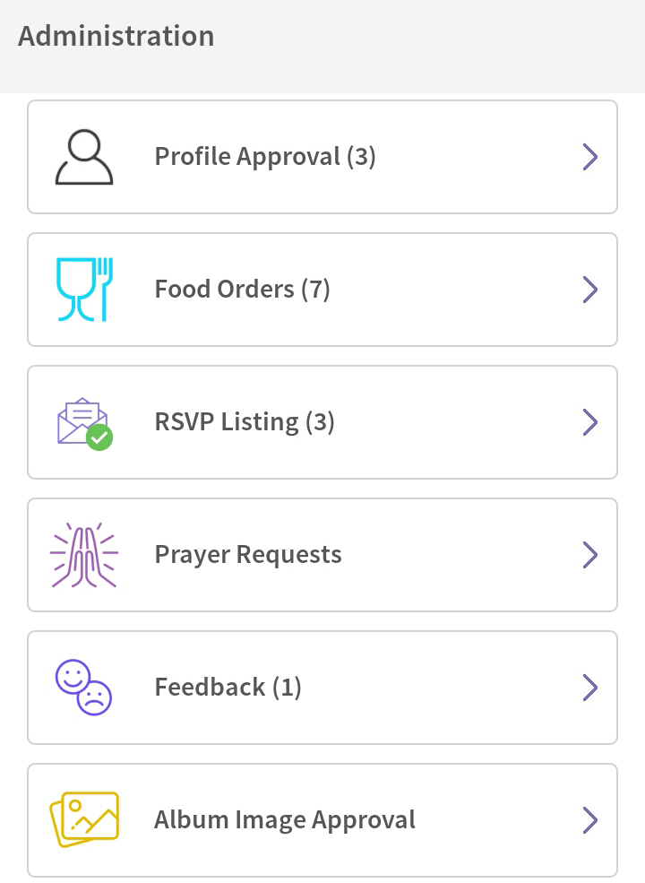
1. Go to Profile Approval page
On the Administrator page, the first button leads to the "Profile Approval" screen
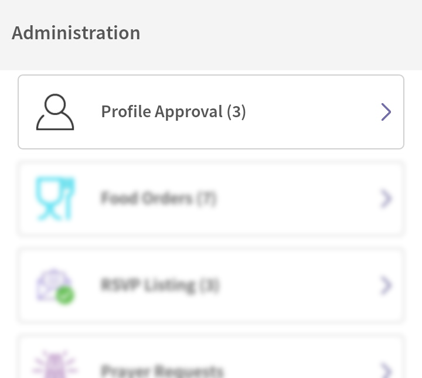
2. List of approval requests
The profile approval page has a listing of all the requests pending for approval.
Click on a request to proceed and approve a members data
3. Change Requests
Once a members request is opened, you will see the list of changes requested by the member.
Click on the information (i) icon to view the changes
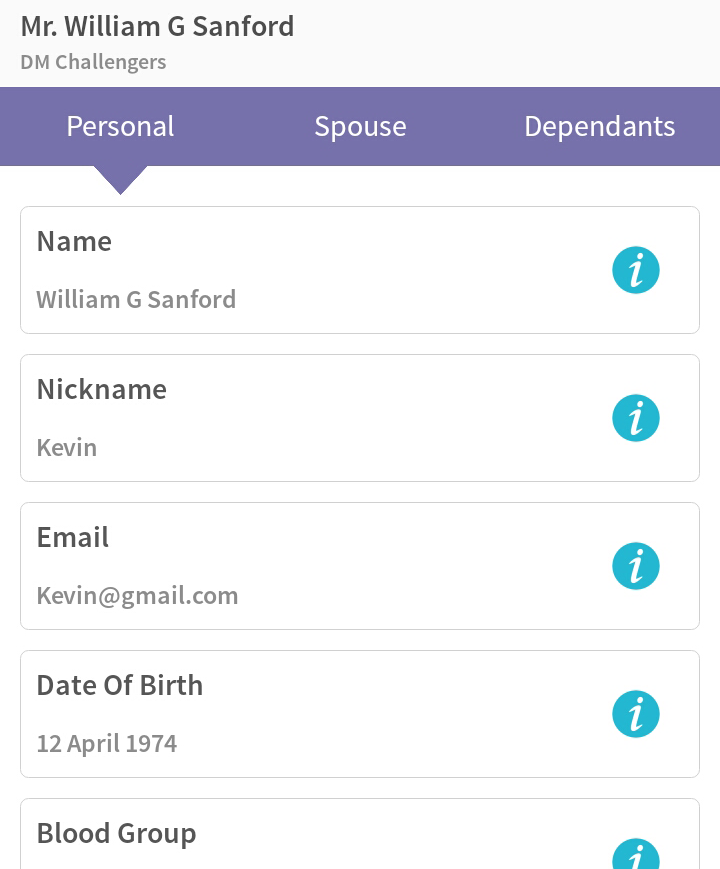
4. Change Requests on spouse and dependants details
Additionally, you can also approve the changes requested to be made on the spouse and dependant information, from the tabs on the top bar.
Click on tabs "Spouse" or "Dependants to view their information change requests"

5. Approval
Clicking on the information icon will take you to the detail page where the current information and the change requested information will be shown
Click on the "Approve" or "Reject" buttons to apply the corresponding effect to the information, then click on the "Save" button to save the applied changes
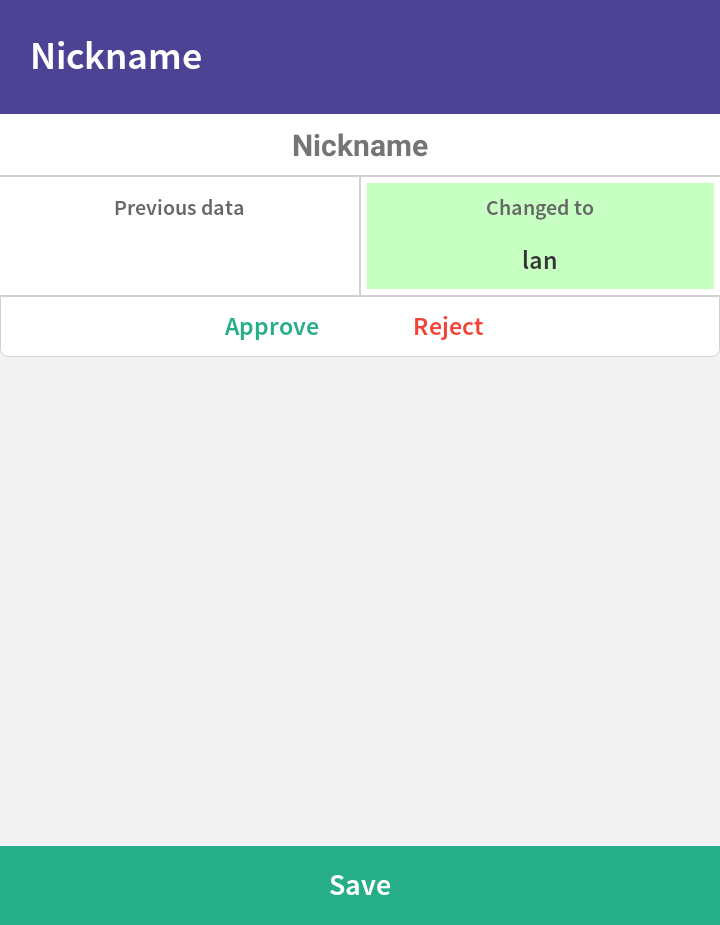
1. Food Orders
On the Administrations page, click on the "Food Orders" button to go to food orders page

2. Food order list
This page lists all the orders placed by the members. Click on an order to see the details
3. Food order detail
Details such as food pickup time, food order tracking, food item details and its price are displayed here
You can change the status of the order from the "Food Order Tracking" section and approve or reject this order by using the green tick or red cross icon at the bottom
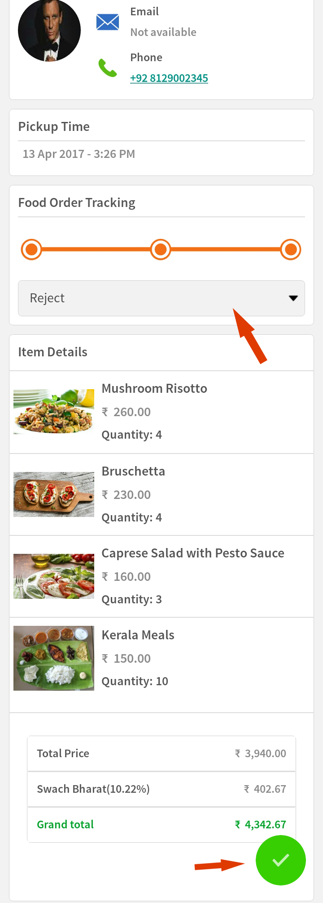
1. Go to the RSVP page
Click on RSVP Listing button on the Administrators page
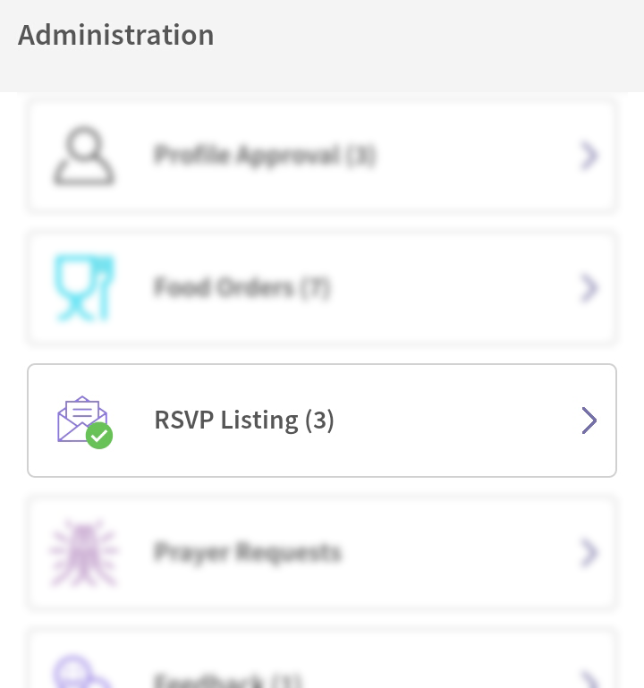
2. List of events
The upcoming events are listed here and there are buttons on the bottom of each listing for "Total Attending" and "Pending"
Click on "Total Attending" to see the list of members attending
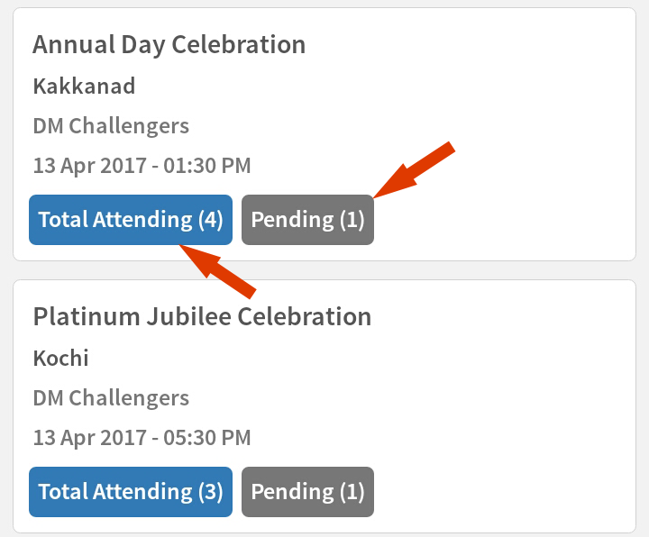
3. Members Attending
Here lists all the members attending
Click on a member listing to view details
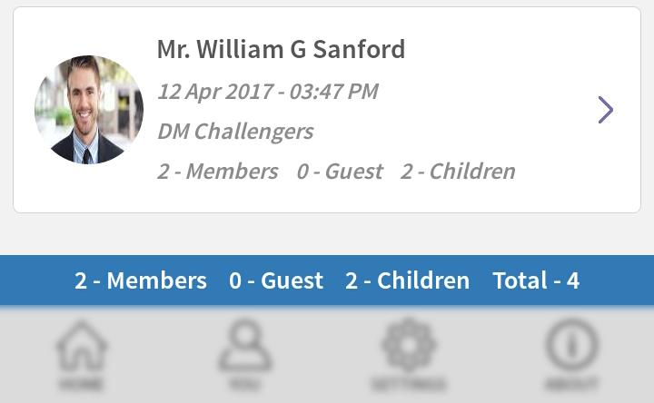
4. RSVP Approval
On the RSVP detail page, you can see the number of members, guests and children attending
Click on the green tick to approve or red cross to reject this RSVP
1. Prayer Request page
Click on the "Prayer Requests" button on the Administration page and you will be directed to a prayer requests listing page
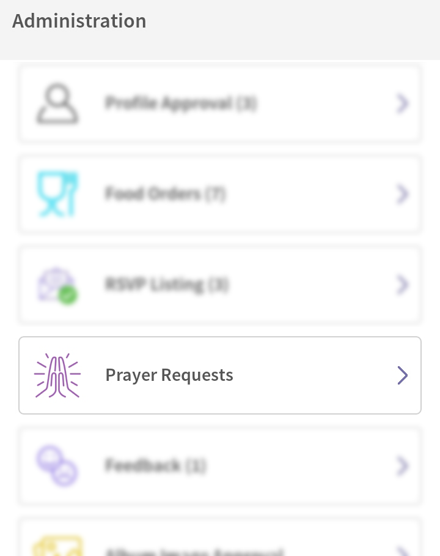
2. Prayer request listing
There is a list of prayer requests by various members on this page
Click on a member to see his/her prayer request
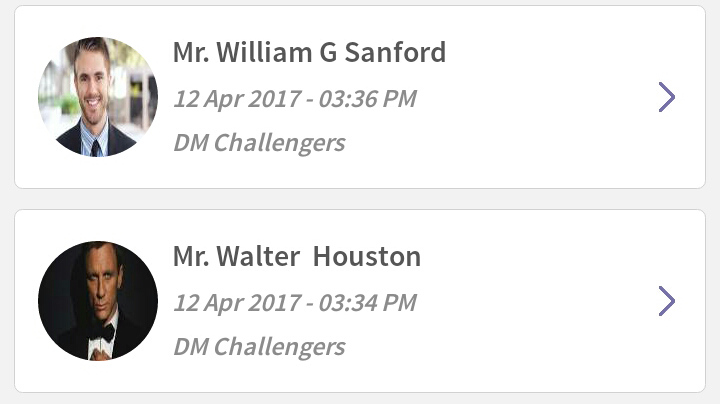
3. Prayer request approval
The prayer requested by the member is displayed here and you can approve this prayer by clikcing on the green tick icon or reject it by clicking on the red cross icon

1. Feedbacks
Click on the Feedback button on the Administrators page to navigate to the feedbacks page
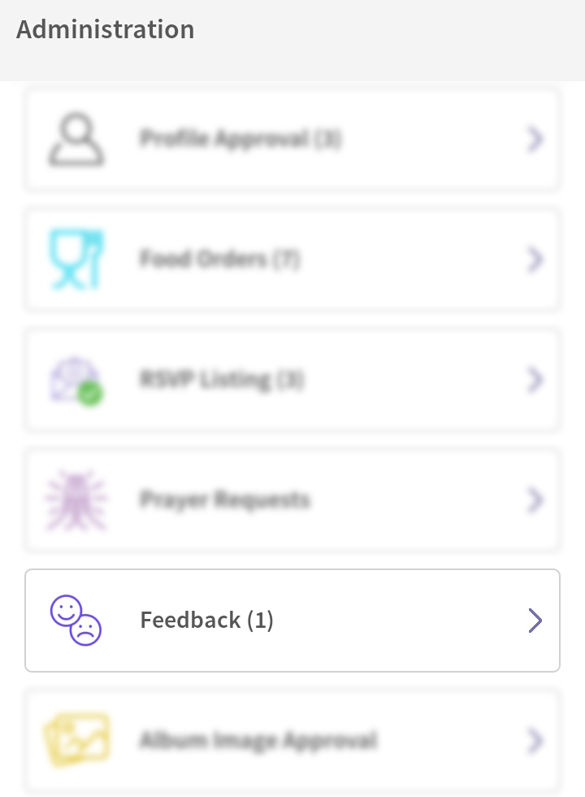
2. Feedback List
The feedbacks page lists all the feedbacks provided by the members.
Click on a members feedback from the list to see the details
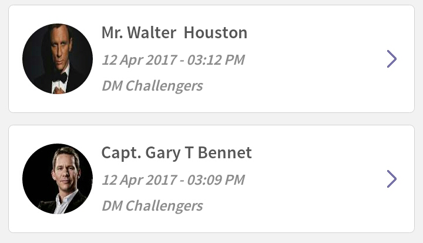
3. Feedback Detail
The details of a feedback provided by a member is displayed here.
You can approve it by clicking on the green tick button or reject it by clicking on the red cross button
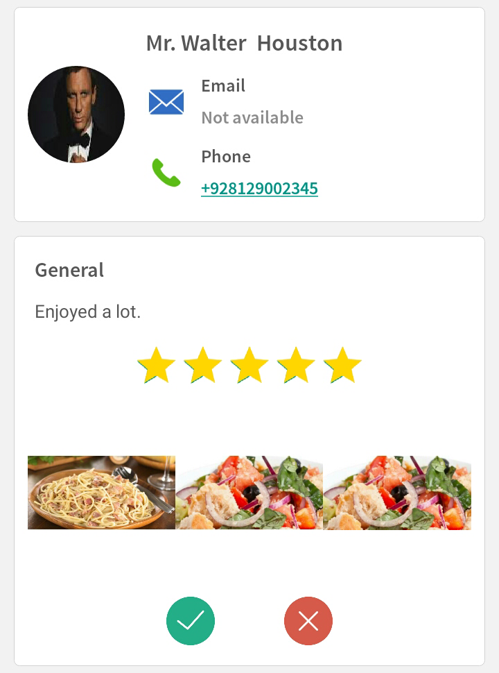
1. Album Approval
Click on the "Album Image Approval" button on the Administrators page to access the image approval listing screen
2. Events
Select an event from the list to approve the photos uploaded to its album
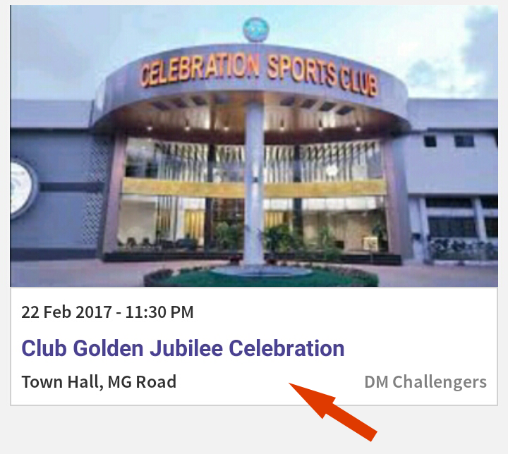
3. Approve Photos
The new photos uploaded are displayed on the bottom of the page. You can scroll through it and click on each photo to select it for approval.
Once you have the photos selected, click on the "Approve" button next to the event name to publish these photos
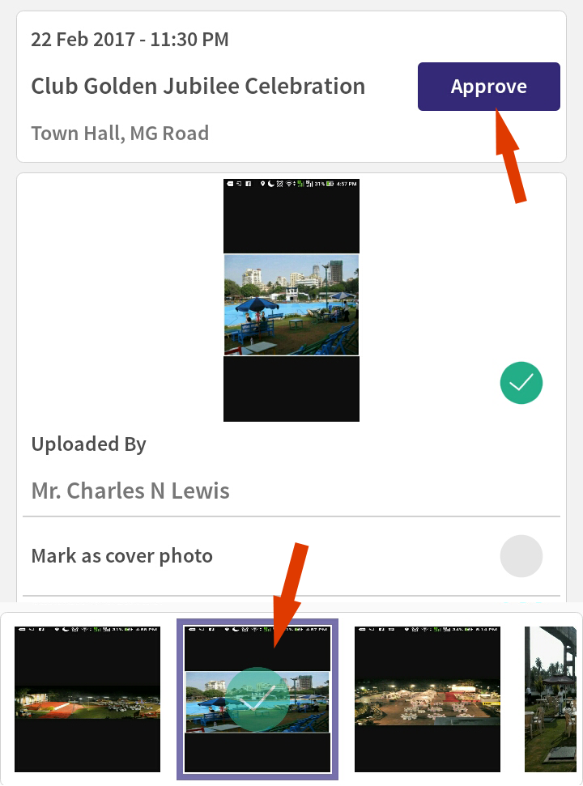
4. Cover Photo
You can make a photo as the cover photo for an album by clicking on the tickbox as shown below.
Select a photo that you would like to make a cover photo and click on the tickbox next to the "Mark as cover photo" label
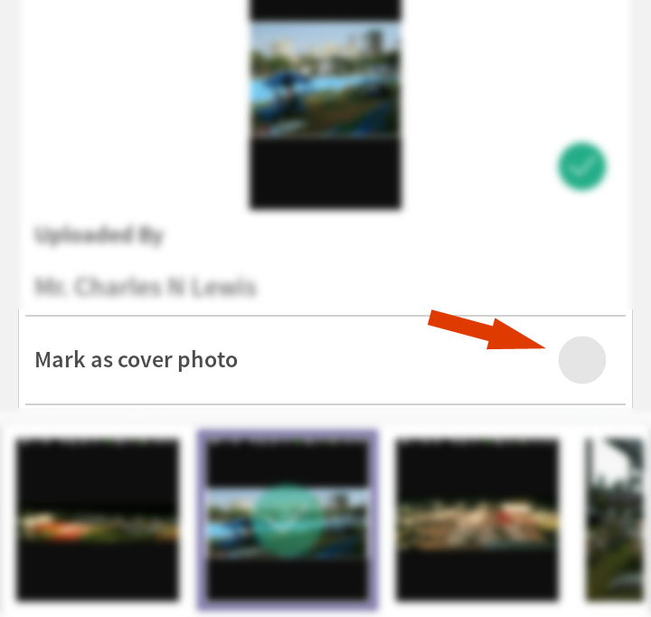